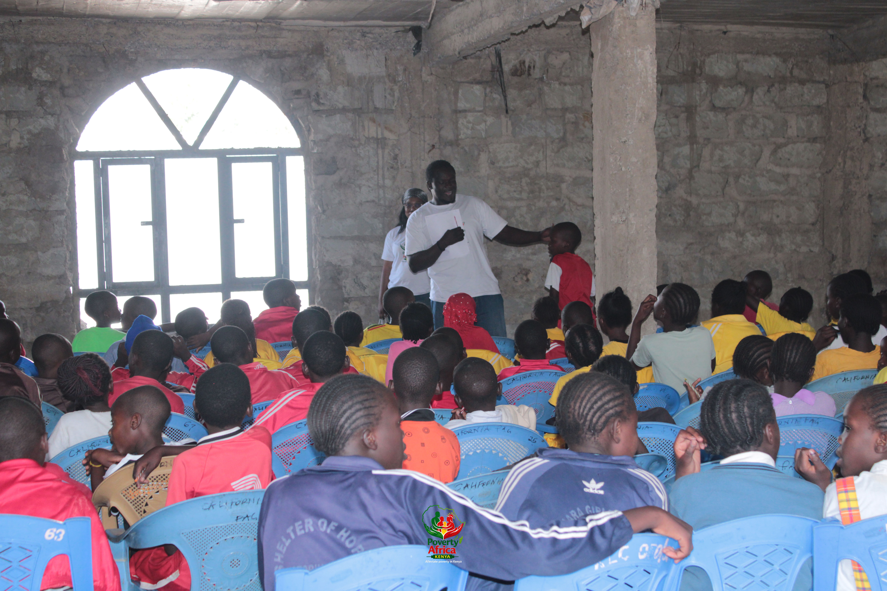

01 / Learning and livelihoods
Education and Economic Empowerment
Supporting access to education, practical skills and economic opportunities that strengthen livelihoods.

WHO WE ARE
POAK (Poverty Africa – Kenya) is a community-centered nonprofit working with communities to address poverty through practical, sustainable solutions. Our work connects education, wellbeing, economic opportunity and environmental resilience.
Founded in 1997, our approach is built on collaboration, local knowledge, and the belief that communities should lead their own progress.
 Board of Directors + Team
Board of Directors + Team
OUR WORK
Four connected areas of work, one shared goal: stronger, healthier and more resilient communities.
Supporting access to education, practical skills and economic opportunities that strengthen livelihoods.

Promoting mental health, nutrition and supportive spaces for healthier individuals and communities.

Building farming skills and sustainable food systems to improve nutrition, food security and livelihoods.

Helping communities adapt to climate challenges through environmental conservation and practical resilience initiatives.
OUR REACH & IMPACT
Our work is grounded in the communities we serve. These figures offer a snapshot of our reach, alongside the personal stories that give the numbers meaning.
Kenyans Empowered
Communities Reached
Counties Served
Schools Reached
"POAK's Girls for Girls program helped me stay in school. The sanitary pads and mental health workshops changed my life."
BE PART OF THE CHANGE
Whether you can give, collaborate or connect us with others, you can help strengthen community-led work in Kenya. We welcome a conversation about where your support can make a difference.
Want to learn more first? Explore our impactCollaboration helps community-led ideas go further.
 Broad Experiential
Broad Experiential
 Solar Panda
Solar Panda
 World Vision
World Vision
 Wisdom Medical Services
Wisdom Medical Services